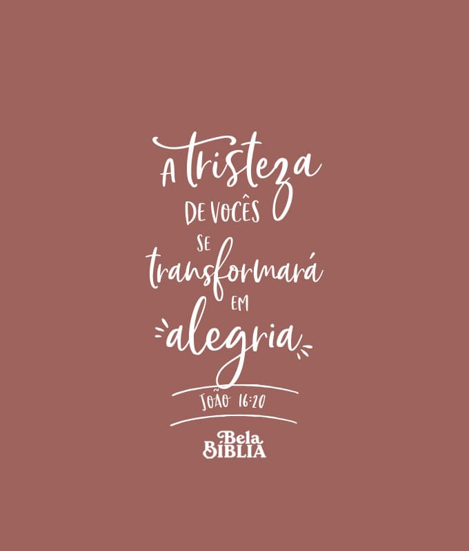
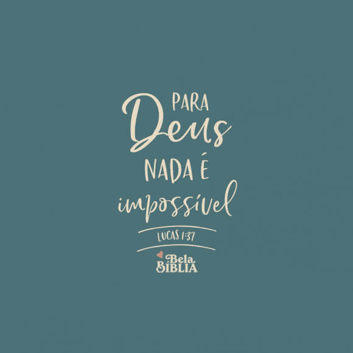

Meus projetos

30 dias de hábitos inegociáveis
Participe desse projeto de 30 dias e transforme sua vida, com exemplos físicos e mental para se desenvolver em 2025!Como se aproximar mais de Deus?
Este projeto é um tutorial breve de como se aproximar mais de Deus, com exemplos práticos e como ser uma pessoa ativa com mais fé!

Como ser uma pessoa produtiva?
Este projeto te ajudará a ser uma pessoa mais produtiva!